Chapter 2 건강보험 청구자료
2.1 국민건강보험공단 자료원
- 국민건강보험공단 (이하, 공단) 보유 자료
- 국민건강 보험에서 제공될 수 있는 자료는 크게 표본연구 DB와 맞춤형 연구 DB로 분류될 수 있음(그림 2-1)

[그림 2-1] 국민건강보험공단의 국민건강정보 DB - 표본연구 DB
- 표본을 추출하여 규격화해서 구축한 자료로, 연구목적의 연구자에게 공개(지정된 IP의 PC에서 원격 분석)하며, 종류는 <표 2-1>과 같음
<표 2-1> 표본연구 DB의 종류
| 구분 | 표본크기(천명) | 구축기간 | 자료건수(천건) | 내용 |
|---|---|---|---|---|
| 표본코호트 2.0 DB | 1,011 | 2002~15(14개년) | 2,174,397 | ○ 의료급여수급권자 포함 전 국민을 대표하는 약 100만명의 표본연구DB(전 국민의 2%) |
| 건강검진 코호트DB | 515 | 2002~15(14개년) | 2,554,326 | ○ 2002년 기준 만40~79세의 건강검진 수검자 중심으로 의료이용, 검진결과 등을 분석할 수 있는 표본연구DB(모집단의 10%) |
| 노인 코호트DB | 558 | 2002~15(14개년) | 2,749,045 | ○ 2002년 기준 만60세 이상 노령층을 중심으로 구축한 표본연구DB(모집단의 10%) |
| 영유아검진 코호트DB | 84 | 2008~15(8개년) | 233,688 | ○ 2008~12년 출생자 중 영유아건강검진 1~2차를 한번 이상 수검한 영유아를 모집단으로 하여 각 연도별 5% 단순 무작위추출 |
| 직장여성 코호트DB | 185 | 2007~15(9개년) | 368,226 | ○ 07.12월 말 기준 건강보험 자격 유지자 중 만 15~64세의 여성 직장가입자 약 360만명의 5% 무작위 추출 |
가) 표본코호트 2.0 DB
- 표본코호트 2.0DB는 약 100만 명에 대한 자료로 (그림 2-2), 자료구성 대한 소개는 다음 <표 2-2>과 같음
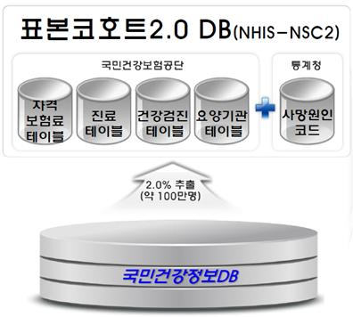
[그림 2-2] 표본코호트 2.0 DB 개요 <표 2-2> 표본코호트 자료 소개
| 모집 기준 | - 2006년 1년간 건강보험가입자 및 의료급여수급권자 자격을 유지한 전국민 대상 |
| 데이터 연도 | - 2002년 ~ 2015년 (총 14년) |
| 표본 추출 수 | - 약 100만명 |
| 표본 추출 방법 | - 전 국민 모집단의 2% 층화추출 (성별(2), 연령(17), 소득수준(21), 지역구분(3)을 층화변수로 층화하여 추출) |
| DB table 구성 | - 전체 table 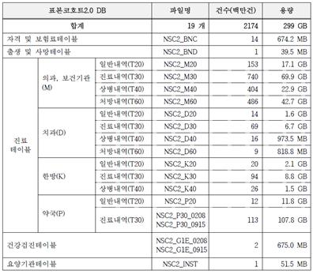 -주요 항목 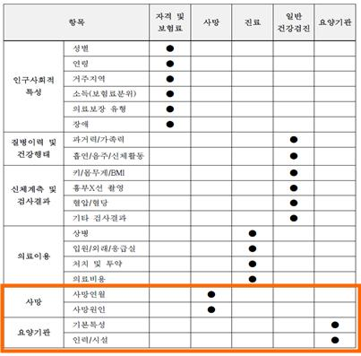 |
나) 건강검진 코호트 DB
- 건강검진 코호트 DB는 약 515만 명에 대한 자료로(그림 2-3), 자료구성 대한 소개는 다음 <표 2-3>과 같음

[그림 2-3] 건강검진 코호트 DB 개요<표 2-3> 건강검진 코호트 자료 소개
| 모집 기준 | - 2002~2003년 일반건강검진 수검자 중 40세-79세의 건강보험 자격유지자 |
| 데이터 연도 | - 2002년 ~ 2015년 (총 14년) |
| 표본 추출 수 | - 약 51만 명 |
| 표본 추출 방법 | - 모집단(약 515만 명)의 10% 단순무작위추출 |
| 자료 특징 | - 전 국민이 검진 대상자가 되는 40세 이상을 대상으로 함 |
| DB table 구성 | - 주요 항목 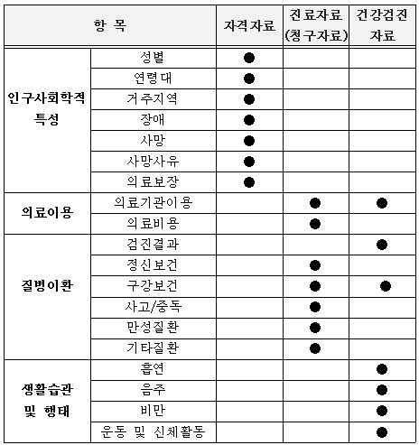 |
다) 노인 코호트 DB
노인 코호트는 60세 이상의 노인 약 56만 명에 대한 자료로 (그림 2-4), 자료구성 대한 소개는 다음 <표 2-4>과 같음

[그림 2-4] 노인 코호트 DB 개요 <표 2-4> 노인코호트 자료 소개
| 모집 기준 | - 2002년 말에 건강보험 및 의료급여 자격을 유지하고 있는 만 60세 이상 노인 |
| 데이터 연도 | - 2002년 ~ 2015년 (총 14년) |
| 표본 추출 수 | - 약 56만 명 |
| 표본 추출 방법 | - 모집단(약 558만 명)의 10% 단순무작위추출 |
| 자료 특징 | - 2008년부터 실시한 노인장기요양 이용정보를 포함하고 있음 |
| DB table 구성 | 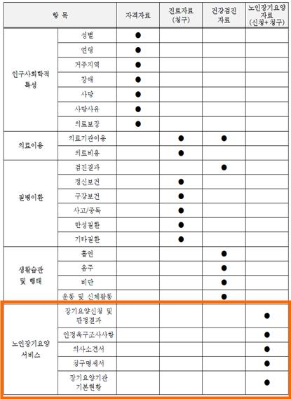 |
라) 영유아검진 코호트 DB
약 8만명의 자료가 담긴 영유아검진 코호트는(그림 2-5), <표 2-5>와 같이 구성됨.

[그림 2-5] 영유아검진 코호트 DB 개요 <표 2-5> 영유아검진 코호트 자료 소개
| 모집 기준 | - 영유아검진 1~2차를 1회 이상 받은 전체 수검자 중 2008~2012년 출생자 |
| 데이터 연도 | - 2008년 ~ 2015년 (총 8년) |
| 표본 추출 수 | - 약 8만 명 |
| 표본 추출 방법 | - 모집단의 5% 단순무작위추출 |
| 자료 특징 | - 영유아의 성장과 발달 상태를 단계별로 살펴볼 수 있음 - 총 10차(일반검진 7차, 구강검진 3차)에 걸친 건강검진 결과 자료 - 최초 구축된 대상자를 지속적으로 follow-up하여 출생부터 사망까지 분석 가능 - 추후 성인 건강검진 자료와 연계 예정 |
| DB table 구성 | - 주요 항목 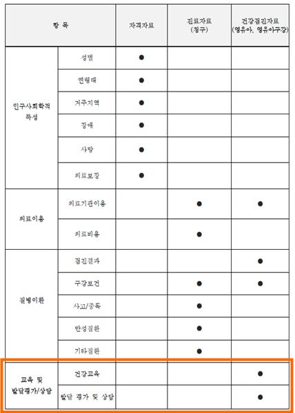 |
마) 직장여성 코호트 DB
직장여성 코호트 DB는 약 18.5만 명에 대한 자료로(그림 2-6), 자료구성 대한 소개는 다음 <표 2-6>과 같음

[그림 2-6] 직장여성 코호트 DB 개요 <표 2-5> 영유아검진 코호트 자료 소개
| 모집 기준 | - 2007년 12월말 자격을 유지하고 있는 건강보험 15~64세 (여성)직장가입자 |
| 데이터 연도 | - 2007년 ~ 2015년 (총 9년) |
| 표본 추출 수 | - 약 18.5만 명 |
| 표본 추출 방법 | - 모집단(약 371만 명)의 5% 단순무작위추출 |
| 자료 특징 | - OECD에서 지정한 생산가능 인구 연령(15세~64세) 기준 - 취약계층 여성근로자가 다수 포함 - 직장여성들만이 가지는 건강행태와 질병 발생 등의 분석 가능 - 직장가입이력 제공으로 이직, 업종별 특성 등 다양한 형태로 분석 가능 |
| DB table 구성 | - 주요 항목 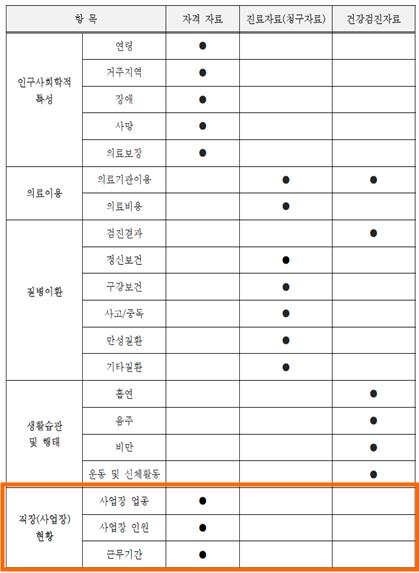 |
- 맞춤형연구 DB
- 연구 과제에 따라 연구자가 원하는 형태로 별도의 데이터셋을 구축하여 제공하는 연구용 DB
- 맞춤형 건강정보자료를 열람 및 연구 분석할 수 있는 PC가 설치된 공단 내의 장소인 “빅데이터 분석센터”에서 통계분석 툴(Tool)을 이용하여 제공
- 제공대상이 제한적
- 국가기관 및 지방자치단체
- 「공공기관의 운영에 관한 법률」 제4조에 따른 공공기관
- 제1호 또는 제2호에 해당되지 않으면서 정책연구나 학술연구를 수행하는 기관 또는 사람
- 공단과 체결한 협약(MOU, Memorandum of understanding) 등에 따라 연구를 수행하는 기관 또는 사람
- 그 밖에 제1호부터 제4호에 해당하지 않으며 기타연구를 수행하는 기관 또는 사람
- 국가기관 및 지방자치단체
- 원격 분석으로 제공되지 않는 다양한 자료 이용 가능 (사용 가능 변수목록 첨부)
- 현재 연구실에서 진행 중인 공단 과제에서 이용 예정
2.2 건강보험심사평가원(HIRA) 자료원
HIRA 보유 자료

HIRA 청구 명세서 자료 구조
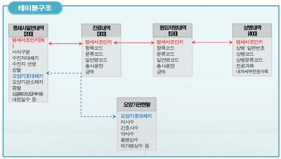제공 대상
- 국가, 지방자치단체 및 정부 산하기관
- 연구 중심 병원 및 학술 연구 수행기관 등
- 제공 범위
- 전 국민의 건강보험 청구자료
- 보건의료 자료 제공 시 건강보험자료 범위 내에서 제공
- 맞춤형 자료 제공 시 심평원에서 제공 가능한 형태의 자료 제공
- 보건의료 자료 제공 시 건강보험자료 범위 내에서 제공
- 전 국민의 건강보험 청구자료
- 제공 자료 선택
- 포털 사이트에서 상병, 약품, 행위에 대해 선택적으로 신청하여 이용 가능
- 2007년 1월 1일 ~ 2021년 6월 30일 명세서까지 이용 가능 (2022년 1월 기준으로, 신청 전 문의하여 확인 필요)
- 포털 사이트에서 상병, 약품, 행위에 대해 선택적으로 신청하여 이용 가능
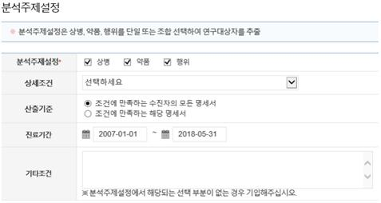
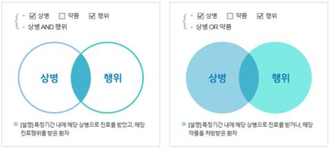
환자 기본사항 선택

DB table 구성
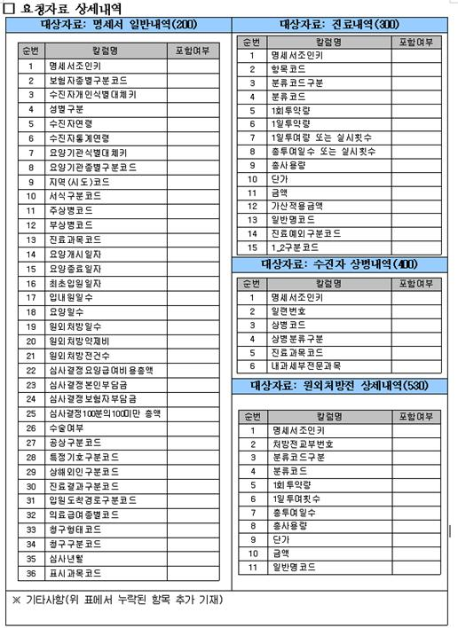
2.3 공단 및 심평원 자료 비교
| 항목 | 공단 표본코호트 2.0 DB | 심평원 DB |
|---|---|---|
| 제공범위 | - 100만 명 표본 데이터 셋 (동일) - 2002-2015년 자료 고정 |
- 신청하는 항목에 따라 제공받는 data가 다름 (기본적으로 전 국민 명세서) - 환자 수가 적은 질환 등을 연구할 경우 공단 표본코호트보다 적합 - 비교적 최신자료까지 이용 가능(현재 기준 2021년 6월 자료까지) |
| Data 구성 | - 자격 및 보험료 테이블, 출생 및 사망테이블, 건강검진 테이블이 별도로 존재 - 진료테이블을 의과, 치과, 한방, 약국을 구분하여 제공 - 원격 시스템 PC 내에서 SAS 지정 라이브러리 및 TABLE에 접근 불가 (오직 SAS 프로그램에서만 접근) |
- 20, 30, 40, 53의 4개의 Table 제공 - 원격 시스템 PC 내에서 SAS 지정 라이브러리 및 TABLE에 접근 가능 |
| 이용환경 | - AXGATE VPN Client 프로그램을 통하여 원격 시스템 접속 - 원격분석 시스템 접속 시 SMS 또는 OTP인증 필요 - ROOM은 하나를 배정 받았으나 각각 개별의 컴퓨터를 사용하므로 분석한 자료가 공유되지 않음 - 동시 접속 불가능 (로그오프까지 필요) - 원격시스템 외부에서 내부로 복사 및 붙여넣기 가능 (텍스트 및 엑셀 표 등) - 캡쳐 프로그램 이용 불가→ 우회적인 경로로 캡쳐 가능 |
- https://ras.hira.or.kr 웹사이트를 통하여 원격 시스템 접속 - 원격분석 시스템 접속 시 공인인증서 로그인 필요 - ROOM을 배정 받으면 한 컴퓨터를 최대 2인의 이용자가 공유하여 쓰는 개념 - 동시 접속 불가능 - 원격시스템 외부에서 내부로 복사 및 붙여넣기 불가능 → 반입 절차 필요 - 캡쳐 프로그램 이용 가능 |
| 비고 | - 신청 시 동일한 DB를 받으므로, 개인 연구의 경우 한 번 신청하여 2개 이상의 연구를 진행할 수 있을 듯 - SAS 확장편집기에 많은 내용을 입력하면 창이 느려지는 현상 발생 - 분석 자료의 과정 및 결과 공유가 안 되므로 고려하여 연구 계획 수립 |
- 원격 시스템 설치 과정이 다소 복잡함 - 접속 시 V3 개인 방화벽 OFF 필요 |
2.4 공단과 심평원 원격 Setup
- 공단 AXGATE VPN setup

- 공단 표본 원격 SAS EG profile setup
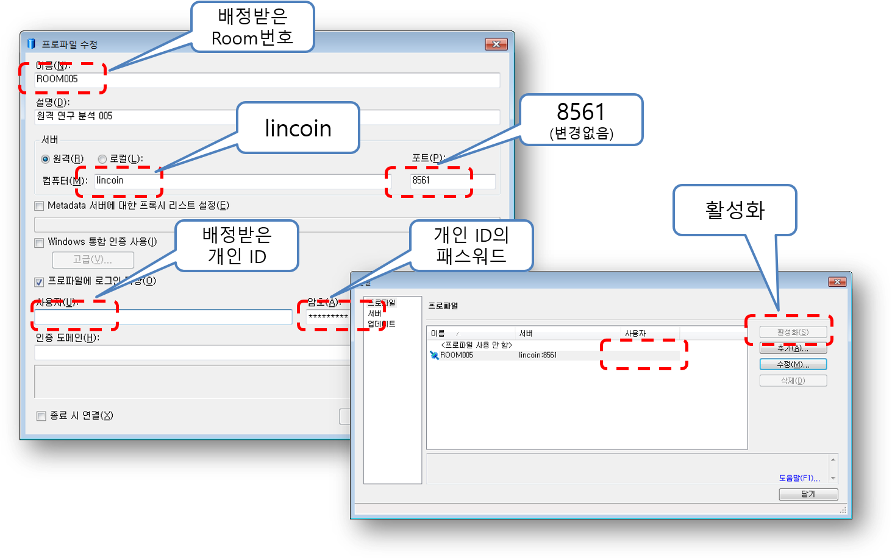
- 심평원 표본과 전수 원격 SAS EG profile setup
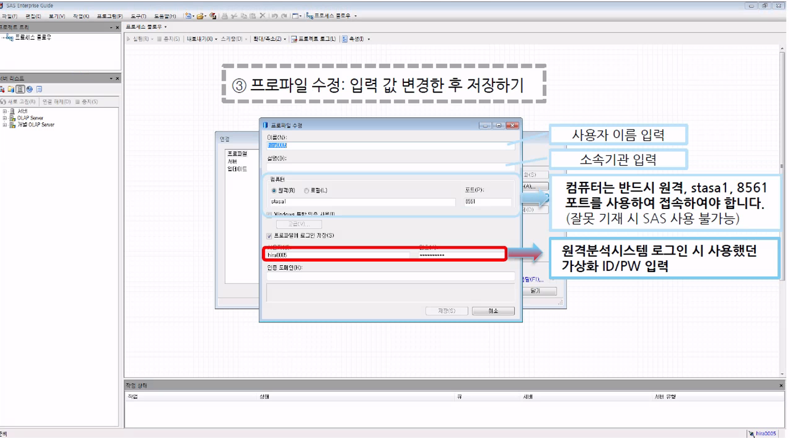